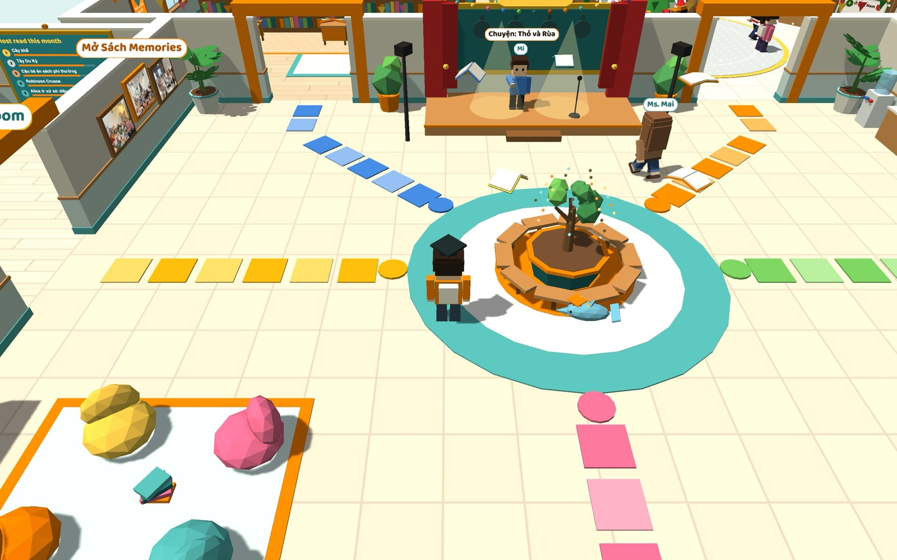
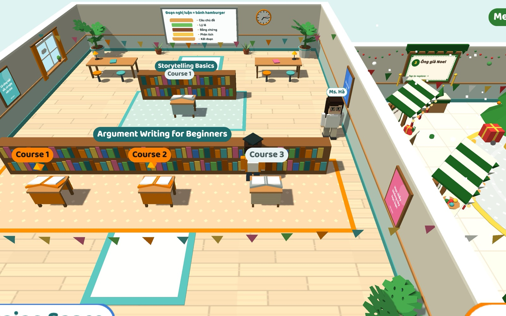
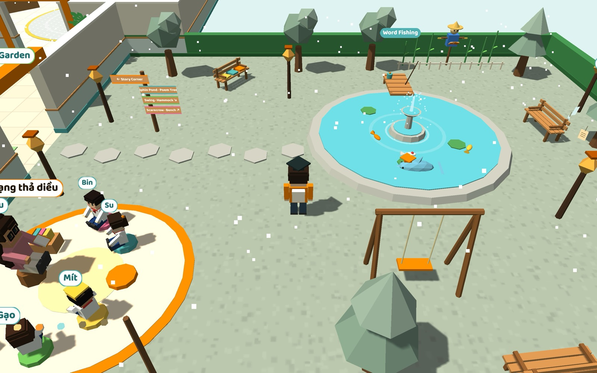
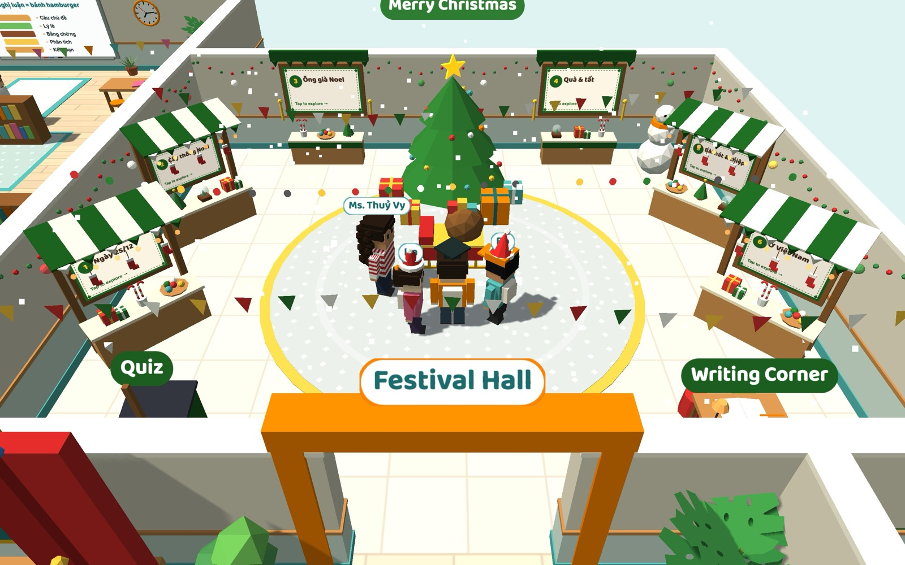

The challenge
Keep children reading and writing between classes
Mở Sách teaches in person. Between lessons, students had no place to practice that felt like the center: warm, playful, and theirs. A plain course list would not compete with games and videos on a child's phone.
Constraints
- Young learners, many on phones, some with slow devices.
- No accounts and no server: progress is saved on the device, and the site works as static files.
- All learning content is Vietnamese-language practice, so it has to stay in Vietnamese.
- Teachers, not developers, need to add books, films and puzzles over time.
Design principles
Six decisions that shaped the space
3D is the hallway, 2D is the classroom
The 3D world is for curiosity and navigation. Every lesson, book or quiz opens as a clean 2D panel with readable text. No long text lives in 3D.
Every 3D object has a button twin
A “Quick travel” menu lists every room, activity and character, and a 2D version covers slow devices. Nobody is locked out by the 3D.
Mistakes are free
Sea Stars only add up: one for a correct first try, none lost for a wrong one. A wrong answer gives a hint; two wrong answers reveal the answer with an explanation.
Real evidence only
Argument-writing courses use verifiable evidence with sources. Anything illustrative is labeled as a sample, so students learn what good evidence looks like.
Content is data
Books, films, festival stalls, puzzles and character dialogue live in simple data files. Adding a book is adding one entry, not rebuilding a page.
Modeled on the real center
The seven teacher characters are based on Mở Sách's real teachers, down to Ms. Vi's red dress and the aloe and monstera plants she waters every day.
A walk through the rooms
Each room has one clear job

A tree that grows with you
- The Mở Sách Tree grows leaves, flowers and “book fruit” as students earn Sea Stars.
- A storytelling stage: a student character tells fables, and students can step up and take a bow.
- A daily Vietnamese Challenge with three new puzzles on every visit.

Courses as desks, grouped by series
- Each course is a desk; its color shows the series, and locked courses look faded.
- The whiteboard shows the “hamburger” model used across the writing courses.
- Opening a desk launches the course as a full-screen 2D lesson.

Classics made approachable
- An East & West classics bookcase: ten classics retold as short summaries written by Mở Sách.
- A monthly “most read” leaderboard turns reading into a friendly race.
- Copyrighted picture books get a reading guide instead of copied pages, and students borrow the paper copy.

Play that sneaks in practice
- Four seasons and day/night, with a poem tree that offers seasonal Vietnamese poetry.
- Word Fishing: catch letter-fish in order to spell words and proverbs. Fireflies at night ask folk riddles.
- A story corner where a teacher tells true stories of real people who loved learning.

Watch → Think → Write
- Short films chosen or made by Mở Sách teachers.
- Each film is followed by tap-to-answer questions (some deliberately have no right answer) and a short written reflection.
- A reflection corner keeps writing close to the screen.

Culture as a fair
- Tết, Mid-Autumn, Halloween and Christmas, chosen automatically by date.
- Six stalls, each with a short reading, a fun fact and new words; a quiz and writing prompt complete the visit.
- Finishing everything earns a badge students can wear on their avatar.
Course design
Argument writing, one layer at a time
The flagship series teaches grades 6–9 to write an argument paragraph. Instead of starting with the topic sentence, the order follows how students actually build an argument: evidence and analysis first, then reasons, then the topic sentence.
- Course 1: recognize the 5 parts of a paragraph (no writing yet).
- Course 2: choose strong, real evidence and explain it.
- Course 3: write reasons and a topic sentence, then assemble the full paragraph.
Each course has six short lessons (15–20 minutes in total), a dolphin guide who never scolds, up to five Sea Stars, and shuffled ordering tasks so students can't guess by position.
The hamburger model
Accessibility & delivery
Light enough for a child's phone
Low-poly shapes, few lights and capped resolution keep it smooth on phones, with a virtual joystick, and a tap on any room takes you there. Everything also works without the 3D. Progress, writing and badges are saved on the device, so no login is needed.
What's next
Next steps
- Finish Course 3 of the argument-writing series.
- Online saving, so teachers can read students' writing and reflections.
- Test with students on tablets and phones and adjust pacing from what we see.